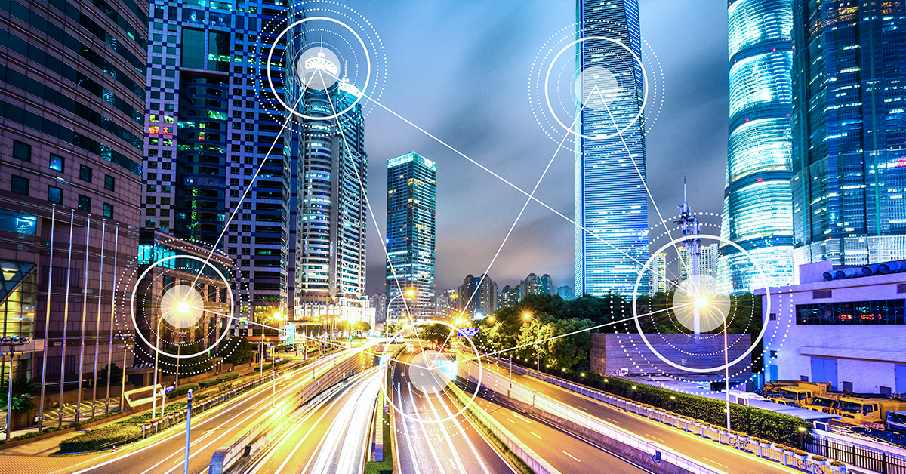
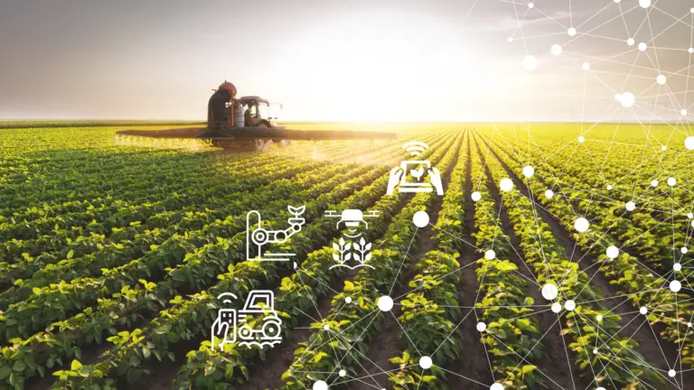

Introdução
O avanço tecnológico impacta significativamente tanto o campo quanto a cidade, trazendo transformações em diversas áreas.
A interdependência entre eles foi um ponto crucial, evidenciando como ambos os ambientes se complementam e são essenciais para a sociedade.
A Tecnologia na Cidade
Na cidade, a tecnologia revolucionou a comunicação, o transporte, o ambiente de trabalho e a forma como as pessoas interagem, tornando o cotidiano mais dinâmico e conectado.
Comunicação
Transporte
Novas Oportunidades de Emprego
Conectividade
A tecnologia no Campo
No campo, a tecnologia impulsiona a agricultura de precisão, a automação de tarefas e o uso de equipamentos modernos, aumentando a produtividade e a eficiência.
Aumento da Produtividade
Eficiência
Biotecnologia
Novos Postos de Trabalho
Conclusão
A conexão entre o campo e a cidade é um tema central na economia, refletindo a interdependência entre esses dois espaços. O campo fornece alimentos e matérias-primas para a cidade, enquanto a cidade oferece tecnologia, mercado consumidor e serviços para o campo. Essa relação é fundamental para o desenvolvimento social e econômico de ambos.